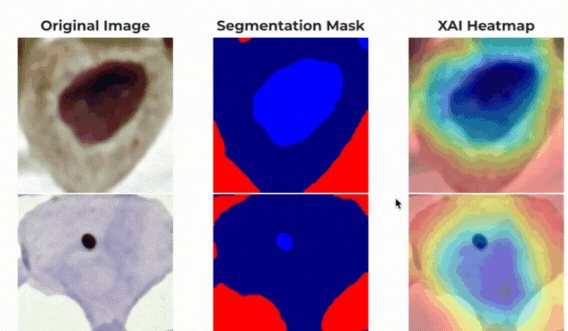
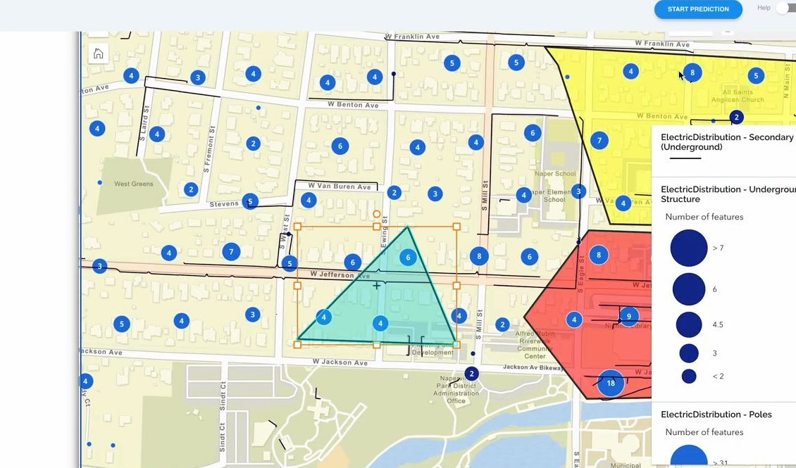
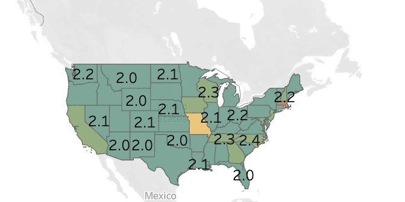

Machine Learning Engineer with 3+ years of experience building production LLM and agentic AI systems for enterprise customers. I am a core contributor to H2O.ai's Enterprise h2oGPTe agent platform, which took the No. 1 position on the GAIA benchmark, and I specialise in Model Context Protocol (MCP) server development, OAuth-secured enterprise tool integration, multi-agent orchestration and agentic RAG.
Alongside that I keep a foot in research, with three peer-reviewed publications in explainable AI — including a Best Paper Award — and an ongoing interest in how people actually work alongside agent systems.

5 stepsFinal year research project on pixel-wise segmentation of cervical cell images using a weakly supervised learning approach, integrating Explainable Artificial Intelligence methods with a Binary Classification model.

3:54A web platform with ArcGIS interactive maps that models geographically distributed assets and disaster events, predicts damage from historical data through automated preprocessing and model-building pipelines, and integrates with IFS DSE for optimal post-disaster restoration scheduling. Winner of ChallengerX 2023.
Aircraft take-off and landing safety prediction system, modelling flight and weather conditions to flag high-risk operations.
A predictive maintenance system utilizes vibration data from various factory machines to offer insights, detect potential faults in advance, and validate predictions using Explainable AI.

2 viewsAn extensive analysis conducted on the US Road Construction and Closures dataset, which encompasses more than 6.2 million records, an interactive dashboard was developed using Tableau.
Churn prediction and retention analytics, surfacing at-risk customers and the drivers behind them through an interactive dashboard.
Mobile application for android users to automate email workflow with editable email templates. Templates can be created from scratch and saved for future use as well.
Created a web application for a Human Resource Management System. Objective was to implement database concepts.
Web based application for a company to manage their suppliers and supply records details. Implemented using React, Nodejs and MySQL. Deployed through Netlify and Heroku.
A system to monitor and manage Covid-19 patients in self-isolation.
January 2020 - July 2024
CGPA: 3.776 / 4.20
Achievements: Dean's List in Semesters 1, 2, 4, and 8
August 2018
Achievements: Island Rank 154, District Rank 4, Z Score 2.284, 3A
August 2024
March 2024
July 2023
Credential ID: 2e8be154303016d1d9c18ca810a06201b26e3a69336a17ce6022d52b2d4bae1a
April 2023
Credential ID: 66f593ee-cb51-4dff-ac4f-9d57eabdb500
July 2022
May 2022
Credential ID: 25705679-1060
September 2021
Credential ID: 21263002
For the paper titled "EnsembleCAM: Unified Visualization for Explainable Cervical Cancer Identification" - Department of Industrial Management, Faculty of Science, University of Kelaniya, Sri Lanka (September 2024)
Developed a city recommendation system for wind and solar energy ventures using weather and geographical data from Sri Lanka (August 2023)
Team "Data Dreamers" developed a disaster simulation platform with ArcGIS-powered maps for visualizing assets and disaster events (May 2023)
Organized by OCTAVE (April 2022) - Developed strategies to address business challenges using real-world data to analyze and predict sales trends
Developed a mobile application for Android users to automate email workflow with editable email templates (September 2022)
Sri Lanka Universities Sports Association (September 2021)
University of Moratuwa
IEEE Access, Vol. 13, pp. 71306–71322 (2025)
View on IEEE Xplore2024 International Research Conference on Smart Computing and Systems Engineering (SCSE)
Best Paper Award in the Smart Computing Track
View on IEEE Xplore4th International Conference on Advanced Research in Computing (ICARC2024)
View on IEEE XploreMy research sits where human-computer interaction meets agent systems: not just whether an agent can complete a task, but whether a person can direct it, understand what it did, and know when to step in.
How people direct, inspect and correct autonomous agents — and the interfaces that make an agent's reasoning, tool calls and intermediate steps legible instead of opaque.
How specialised agents divide work, share context and hand off to one another, and where coordination breaks down as the number of agents and tools grows.
Standardised, permission-scoped tool access for agents, and how protocol and authorisation design shape what an agent can safely do inside real enterprise systems.
Continuing my thesis work on attribution methods that yield evidence a practitioner can actually act on — including weakly supervised segmentation driven entirely by explanations.
Measuring genuine task competence rather than conversational quality, and understanding where benchmark performance diverges from how agents behave once deployed.
Calibrating when a person should defer to an agent and when they should intervene, and designing the handover points that make that judgement possible.
prathushan99@gmail.com
+94 71 699 4360
Batticaloa, Sri Lanka
Open to relocation: Singapore